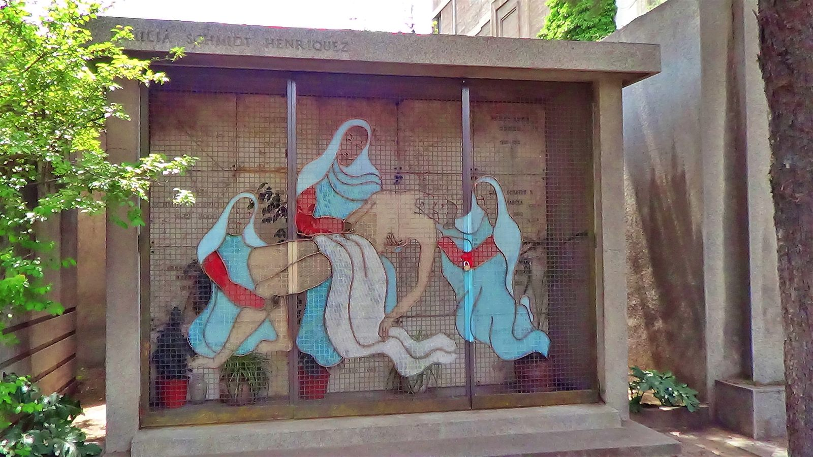

La deuda que supera el presupuesto de todo un año del Cementerio General
El municipio arrastra obligaciones por $8.557,94 millones mientras el principal camposanto de Santiago enfrenta vandalismo, profanaciones y nuevas exigencias de vigilancia.
Especial de datos · cifras 2025–2026 · 7 minutos de exploración aproximada

Dos urgencias.
Una comuna.
Una cifra contable no explica por sí sola la delincuencia. Pero ayuda a dimensionar el desafío de sostener servicios y proteger patrimonio.
La Municipalidad de Recoleta arrastró hacia 2026 una deuda flotante de $8.557,94 millones, un monto que por sí solo supera en más de $620 millones todo el presupuesto disponible durante un año para operar y mantener el Cementerio General. El camposanto cuenta con $7.937,346 millones para financiar sus doce meses de funcionamiento, por lo que las obligaciones pendientes del municipio equivalen al 107,8% de ese presupuesto. El contraste adquiere especial relevancia en un recinto que durante el último tiempo ha debido enfrentar robos, profanaciones, vandalismo y nuevas exigencias de seguridad.
Si el año del cementerio cupiera en 12 casillas…
La comparación presupuestaria cobra forma: toca los controles y observa qué tan lejos llega la deuda flotante municipal. No son gastos equivalentes ni transferibles entre sí.
Visualizador de equivalencias
Cada casilla completa representa 1/12 del presupuesto anual del Cementerio General; la decimotercera representa el excedente equivalente.
La deuda equivale al presupuesto anual completo del cementerio más el 94 % de otro mes promedio. El presupuesto del cementerio es la referencia para esta visualización, no un fondo disponible para pagar deuda.
La diferencia no es menor: esos $620,594 millones equivalen aproximadamente al 94% del presupuesto promedio de un mes del cementerio. Sin embargo, las cifras no significan que la deuda pueda destinarse directamente a seguridad ni que ambos presupuestos sean intercambiables. La comparación permite dimensionar la presión financiera que enfrenta la administración municipal mientras uno de sus principales recintos públicos requiere mantener operaciones, conservar patrimonio y reforzar sus mecanismos de vigilancia.
Explora los puntos del problema
Un escenario conceptual —no un plano del cementerio— permite recorrer los desafíos que aparecen en la noticia. Toca los números y descubre qué está documentado.
Las sepulturas no son solo infraestructura
En mayo de 2025 se denunciaron profanaciones y daños en mausoleos, incluido el del expresidente Salvador Allende. El caso reabrió la discusión sobre el cuidado de espacios de memoria.
Abrir fuente verificable ↗Los puntos son categorías informativas, no coordenadas reales ni localizaciones de incidentes concretos.
Los problemas de seguridad tampoco son aislados. En mayo de 2025, la profanación de varias sepulturas, el ingreso a bóvedas y los daños provocados en mausoleos (entre ellos el de Salvador Allende) dejaron al descubierto las dificultades para controlar un recinto de gran extensión. La dirección del cementerio reconoció entonces que diariamente trabajaban entre 10 y 14 funcionarios en labores de supervisión, pero que no contaban con las capacidades ni certificaciones propias de guardias de seguridad. Los robos de elementos de bronce eran, además, una situación recurrente.
Una historia que no comenzó ayer
Seis hitos documentados, entre hechos de violencia ocurridos en el entorno y medidas institucionales. Selecciona una tarjeta para ampliar el contexto.
Septiembre de 2024: violencia durante una romería
Un joven de 26 años fue apuñalado durante la romería hacia el Cementerio General y falleció posteriormente. Se trata de un hecho ocurrido en el entorno durante la actividad, no de un delito acreditado al interior del camposanto.
Consultar cobertura periodística ↗A la delincuencia dentro del recinto se suman hechos de violencia en sus alrededores. En septiembre de 2024, un joven fue asesinado durante la romería hacia el Cementerio General, mientras que en diciembre de 2025 la PDI investigó como homicidio el hallazgo de un hombre con heridas cortopunzantes en las cercanías. Estos casos no permiten atribuir automáticamente los delitos al interior del camposanto, pero sí sitúan al entorno del cementerio dentro de una comuna que mantiene indicadores de violencia relevantes.
Ver la cobertura de 2024
Video periodístico sobre la romería y los incidentes de septiembre de 2024. Se reproduce solo si lo solicitas.
La cobertura audiovisual corresponde al contexto de 2024; no representa los hechos de 2025 en el interior del recinto.
Consulta la nueva normativa
La regulación municipal de septiembre de 2026 aborda accesos, conductas prohibidas y medidas de resguardo del patrimonio, según el comunicado oficial.
Leer disposición oficial ↗Recoleta supera la tasa metropolitana y nacional
Las tasas de denuncias por delitos contra la vida o la integridad de las personas se expresan por cada 100.000 habitantes. Puedes cambiar de territorio y examinar su evolución entre 2023 y 2025.
Fuente: reporte comunal 2026 de la Biblioteca del Congreso Nacional, con datos CEAD. Las tasas no representan la cantidad de delitos ocurridos dentro del Cementerio General ni son una medición causal del efecto de la deuda.
Las cifras comunales muestran esa presión. Según datos del CEAD recopilados por la Biblioteca del Congreso Nacional, Recoleta registró en 2025 una tasa de 1.229,4 denuncias por cada 100 mil habitantes por delitos contra la vida o la integridad de las personas, frente a 951,2 en la Región Metropolitana y 1.003,2 a nivel nacional. La tasa, además, volvió a aumentar después de bajar de 1.251,6 en 2023 a 1.195,8 en 2024.
Vigilancia, nuevas reglas y coordinación
El municipio y los cementerios han anunciado medidas para fortalecer la seguridad; su eficacia requiere una evaluación específica que no está contenida en esta nota.
Tecnología
El Cementerio General informó en diciembre de 2025 la incorporación de un dron de control operativo. El convenio de octubre de 2026 contempla además coordinar el uso de un dron con cámara térmica y visión nocturna.
Consultar anuncio de 2025 ↗Alianza patrimonial
El 1 de octubre de 2026 se formalizó el convenio entre Recoleta, el Cementerio General y el Cementerio Católico para reforzar la protección del llamado Barrio Cementerios.
Consultar convenio oficial ↗Frente a este escenario, durante 2025 y 2026 se han multiplicado las medidas de control: coordinación con Carabineros y la PDI, refuerzo de la vigilancia, incorporación de un dron para ampliar el monitoreo y un nuevo reglamento interno que regula los accesos y prohíbe expresamente conductas como la profanación, el vandalismo y el porte de armas. El 1 de octubre de 2026, además, el municipio y los cementerios General y Católico suscribieron un convenio para reforzar conjuntamente la seguridad del denominado Barrio Cementerios.
¿Qué se puede concluir? Pon a prueba tu lectura
No toda comparación es una explicación causal. Responde y comprueba qué respaldan realmente los antecedentes.
¿La deuda municipal causó los delitos del cementerio?
Elige una afirmación: recibirás una explicación basada en la evidencia disponible.
El cruce de cifras deja así un problema doble para Recoleta: mientras la comuna debe responder a una deuda acumulada equivalente a más de un año completo de presupuesto del Cementerio General, el recinto necesita seguir destinando recursos a vigilancia, control y conservación. Los datos no permiten afirmar que la deuda sea la causa de los delitos, pero sí muestran la magnitud del desafío financiero que enfrenta una administración que debe mantener funcionando un lugar patrimonial y, al mismo tiempo, responder a un escenario de seguridad cada vez más exigente.
Comprueba cada dato
Fuentes utilizadas para contrastar los antecedentes de seguridad. Las cifras presupuestarias proceden de la noticia original proporcionada para esta adaptación multimedia y requieren mantener sus documentos oficiales de respaldo al publicar.
Metodología: los montos financieros se expresan en millones de pesos chilenos (MM); las tasas de denuncias corresponden a 100.000 habitantes. Las visualizaciones financieras son equivalencias matemáticas de escala, no estimaciones de asignación de recursos o causalidad. Ilustraciones conceptuales y voz sintética no representan registros documentales de los hechos. Elaboración editorial multimedia para TDI Noticias.